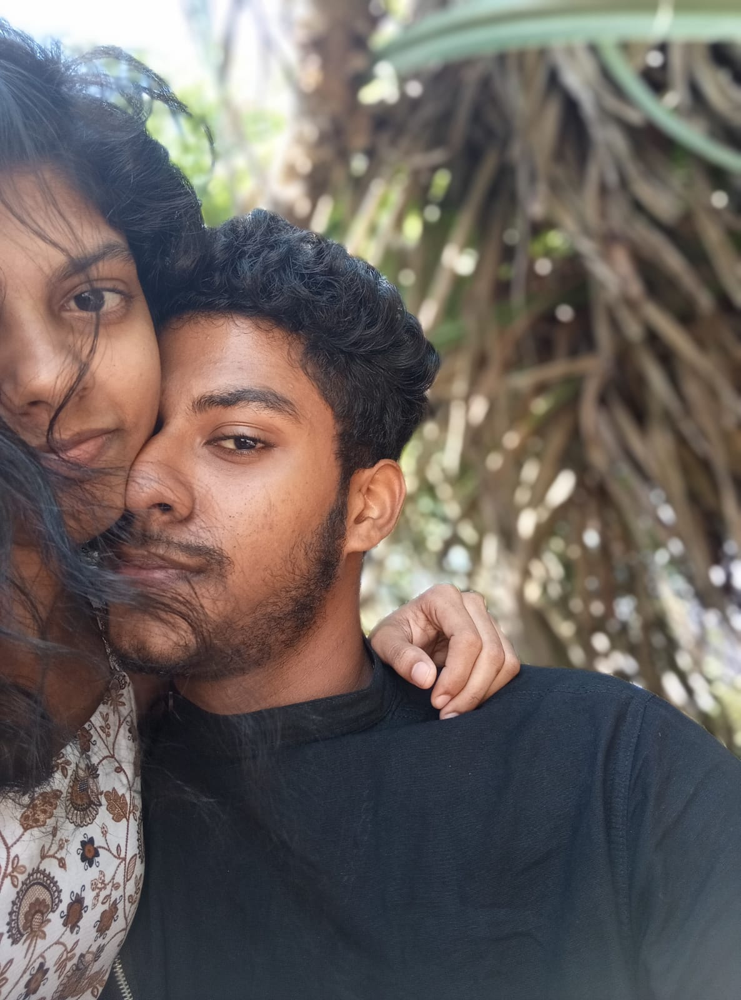
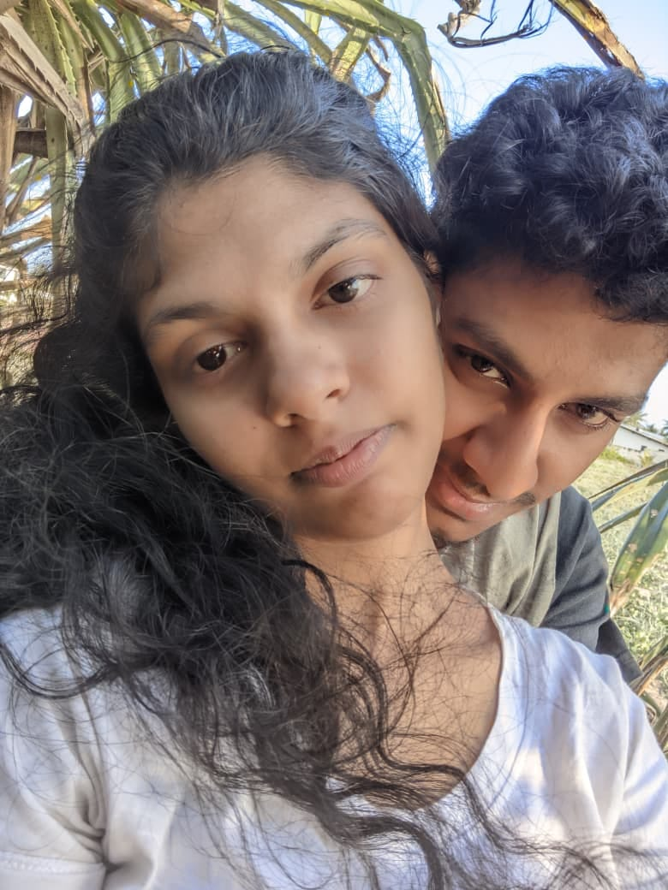
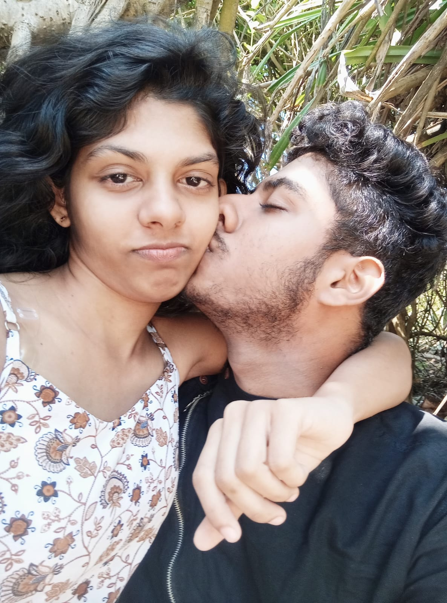
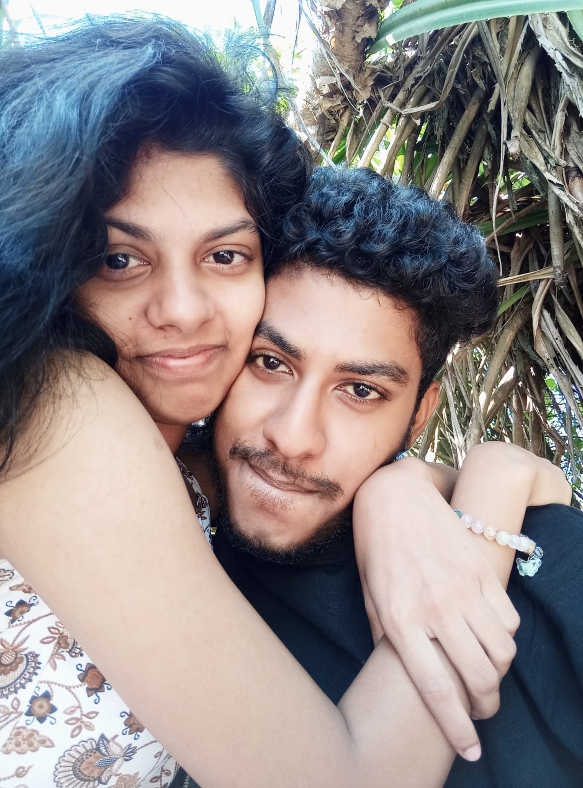
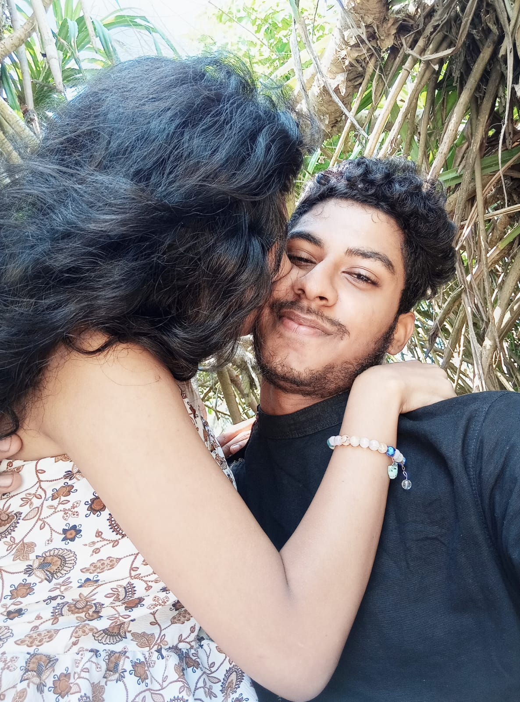
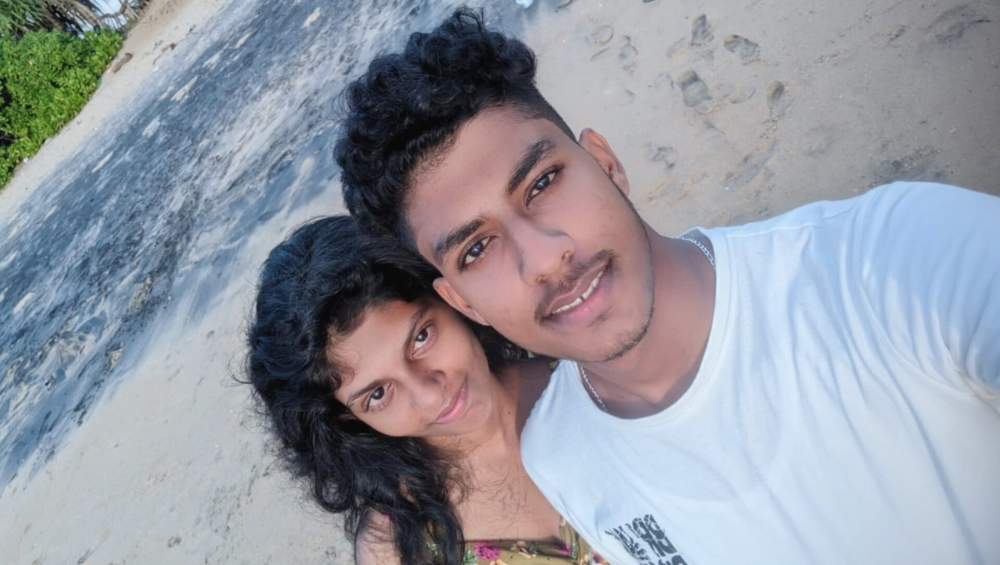
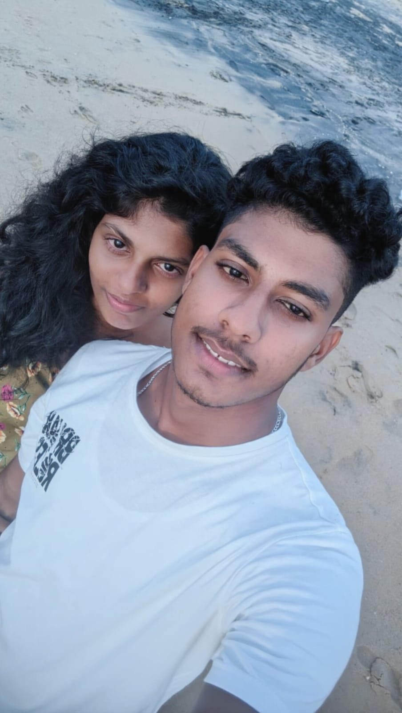
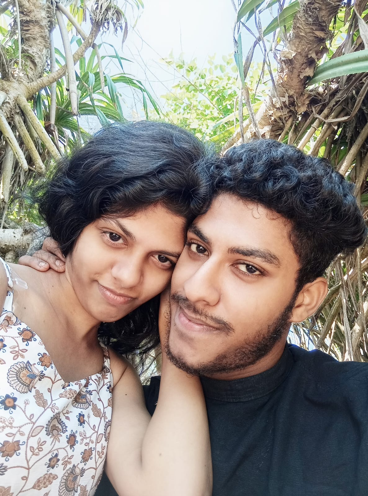
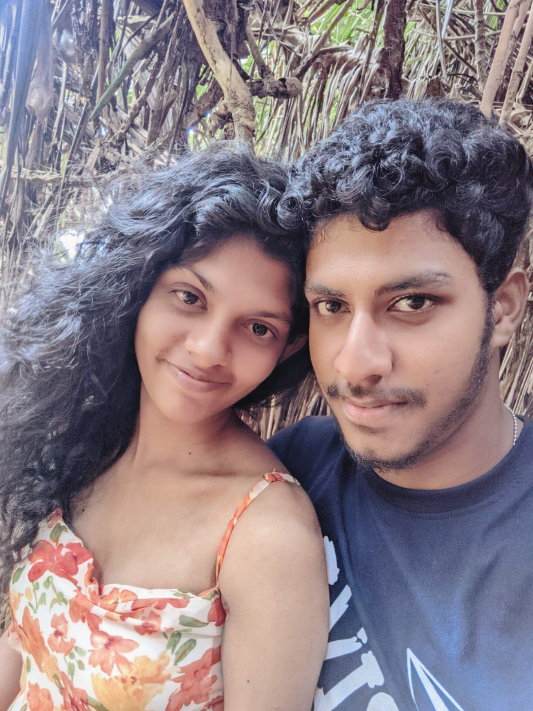

“ඔයාගේ හිතේ මට තාමත් පොඩි හරි තැනක් තියෙනවද? 🥺💔”

💌 මගහැරුණු ආදරයක්…
ඔයා දන්නවද… ඔයා ළඟ අදත් කෙනෙක් ඉන්නවා. ඔයාගේ පොඩි වෙනසක් පවා තේරුම් ගන්න උත්සාහ කරන කෙනෙක්. ඔයා නිහඬ වෙද්දි, “මොකද වුණේ?” කියලා අහන කෙනෙක්.
ඔයා සතුටින් ඉන්නකොට ඔයාත් එක්ක සතුටු වෙන, ඔයා දුකින් ඉන්නකොට ඔයාගේ දුක අඩු කරන්න පුංචිම හරි දෙයක් කරන්න හදන කෙනෙක්. 🥺 ඒ කෙනා මං. මං ඔයාට ආදරේ කරනවා. ඔයාගේ හොඳ දේවල්වලට විතරක් නෙවෙයි… ඔයාගේ අඩුපාඩුත්, ඔයාගේ වැරදිත්, ඔයාට සමහර වෙලාවට නොතේරෙන දේවලුත් තේරුම් කරන්න උත්සාහ කරමින්ම. 🤍
ඔයා අතින් මට රිදෙන දේවල් වෙලා තියෙනවා. සමහර වචන මට තාමත් මතකයි.සමහර සිද්ධි මතක් වුණාම තාමත් හිත ටිකක් රිදෙනවා. ඒත් මං ඒ හැමදේම හිතේ තියාගෙන ඔයා එක්ක තරහා වෙලා ඉන්න කැමති නෑ.මං ඔයාට සමාව දෙනවා. ඒ කියන්නේ මට රිදුණේ නෑ කියන එක නෙවෙයි. ඒ කියන්නේ වෙච්ච දේවල් මං අමතක කරනවා කියන එකත් නෙවෙයි. මට රිදුණත්, මගේ හිතේ ඔයා ගැන තියෙන ආදරේ ඒ රිදුමට වඩා ලොකු නිසා. ❤️
මං ඔයාගෙන් perfect වෙන්න ඉල්ලන්නේ නෑ. ඔයාට වැරදි වෙන්න පුළුවන්. මටත් වැරදි වෙන්න පුළුවන්. ඒත් අපි දෙන්නා අතරේ වැරදි වෙන හැම වෙලාවකම එකිනෙකාව අතහරිනවට වඩා, එකිනෙකාව තේරුම් ගන්න උත්සාහ කරමු. 🥺
මොකද මට ඕනේ අද විතරක් ඔයා ළඟ ඉන්න නෙවෙයි. ඔයාගේ හොඳ දවස්වලත්, නරක දවස්වලත්, ඔයා සතුටින් ඉන්න දවස්වලත්, ඔයාට කිසිම දෙයක් හිතාගන්න බැරි දවස්වලත්… ඔයා ළඟින්ම ඉන්න. 💗
සමහර වෙලාවට මං තරහා වෙයි. සමහර වෙලාවට මං අඬයි. සමහර වෙලාවට මටත් හිතෙයි “ඇයි මෙහෙම වෙන්නේ?” කියලා. ඒත් ඒ හැම හැඟීමක් අතරෙම එක දෙයක් වෙනස් වෙන්නේ නෑ. මං ඔයාට ආදරෙයි. ❤️ඒ නිසා මං අතීතය අල්ලගෙන අද අපි අතර තියෙන ආදරේ නැති කරගන්න කැමති නෑ. වෙච්ච දේවල් අපිට පාඩමක් කරගමු. එකිනෙකාව රිද්දපු තැන් තේරුම් ගමු. ආයෙත් ඒ තැන්වලට යන්නෙ නැතුව තවත් ලස්සනට අපි දෙන්නා ඉස්සරහට යමු. 🤍
මං ඔයාට සමාව දෙනවා… මොකද මට අතීතයේ වැරදිවලට වඩා අද අපි දෙන්නා අතර තියෙන ආදරේ වටිනවා. ඒ වගේම… මට ඔයාව නැති කරගන්න ඕනේ නෑ. 💗🥺
ඔයාට gifts 3ක් තියෙනවා 🎁💗
එකක් click කරන්න 😍
ඔයාට මාව මතක් වුණාම මේ letter එක open කරන්න… 🥺
සමහරවිට අද මාව මතක් වෙන්නේ හේතුවක් නැතුව වෙන්න පුළුවන්. එකපාරටම පරණ කතාබහක් මතක් වෙන්න පුළුවන්. අපි එකට හිනා වුණු දවසක්, මං කියපු පොඩි කතාවක්, නැත්නම් අපි දෙන්නා අතර තිබුණු කිසිම කෙනෙක් නොදන්න පුංචි මතකයක්… 🥺ඒ වෙලාවට මං ඔයා ළඟ නැති එක ගැන දුක හිතෙන්න පුළුවන්.ඒත් මට කියන්න තියෙන්නේ එක දෙයයි…ඔයාට මාව මතක් වෙන හැම වෙලාවකම, මමත් කොහේහරි ඉඳන් ඔයාව මතක් කරනවා කියලා හිතාගන්න. ❤️🩹අපි අතර තිබුණු දේවල් හැම එකක්ම perfect නොවෙන්න ඇති. අපි දෙන්නම වැරදි කරලා ඇති. සමහර වචන කියන්න තිබුණේ නැති වෙන්නත් පුළුවන්. සමහර දේවල් කියන්න ඕනේ වෙලාවේ කියන්න බැරි වෙන්නත් පුළුවන්.ඒත් ඒ හැමදේකටම වඩා මට වටින්නේ අපි අතර තිබුණු ඇත්තම මතක ටික. 💗ඒ නිසා අද මාව මතක් වුණා නම්… දුක් වෙන්න එපා.පොඩ්ඩක් හිනා වෙන්න. 😊මොකද කවදහරි මගේ මතකයක් ඔයාගේ මූණට හිනාවක් ගෙනාවා නම්, ඒ මතකය තාමත් වටිනවා.
මාව මතක් වුණාම මාව අමතක කරන්න උත්සාහ කරන්න එපා… මතකයක් විදිහට හරි මාව ඔයාගේ හිතේ තියාගන්න. 🥺💗
ඔයාට ගොඩක් දුක හිතුණු දවසක මේ letter එක open කරන්න… 🥺
මුලින්ම එක දෙයක් මතක තියාගන්න…ඔයාට හැම වෙලාවෙම strong වෙලා ඉන්න ඕනේ නෑ. 🥺සමහර දවස් තියෙනවා අපිට කිසිම දෙයක් හරියන්නේ නැති වගේ දැනෙන. කවුරුත් අපිව තේරුම් ගන්නේ නෑ වගේ හිතෙන. හැමෝම ළඟ ඉන්නවා වගේ පෙනුණත්, ඇතුළෙන් අපි තනියම වගේ දැනෙන දවස්…එහෙම දවසක් අද නම්, මේ letter එක ටිකක් වෙලා අරගෙන කියවන්න. ❤️🩹ඔයාට අඬන්න ඕනේ නම් අඬන්න. හිතේ තියෙන දේවල් හංගගෙන ඉන්න ඕනේ නෑ.මොකද දුක කියන්නේ ඔයා දුර්වලයි කියන එක නෙවෙයි.ඒකෙන් කියන්නේ ඔයාට දේවල් ගැන ඇත්තටම හැඟීමක් තියෙනවා කියන එක. සමහරවිට ඔයාට හිතෙයි, “මේ හැමදේම කවදා හරි හොඳ වෙයිද?” කියලා.ඔව්… කාලයක් යයි. සමහර දේවල් අමතක වෙයි. සමහර දේවල් අමතක නොවුණත් ඒවා එක්ක ජීවත් වෙන්න අපි ඉගෙන ගනී. ඒ නිසා අද දවස අමාරුයි කියලා, හෙටත් එහෙමම වෙයි කියලා හිතන්න එපා. 🥺ඔයාට හිනාවෙන්න තවත් දවස් තියෙනවා.ඔයාට සතුටු වෙන්න තවත් මතක තියෙනවා.ඒ හැමදේම තාම ඉස්සරහට තියෙනවා. 💗ඉතින් අද දුක නම්… ටිකක් අඬලා, හුස්මක් අරගෙන, ආයෙත් හෙමින් ඉස්සරහට යන්න.
ඔයා හිතනවට වඩා ගොඩක් වටින කෙනෙක්. ❤️🩹
😡 මං එක්ක තරහා ගිය වෙලාවක මේ letter එක open කරන්න…
මුලින්ම…ඔයාට මං එක්ක තරහා වෙන්න අයිතිය තියෙනවා. 🥺මං හැම වෙලාවෙම හරි කෙනෙක් නෙවෙයි. මං කියපු වචනයක් ඔයාට රිදෙන්න ඇති. මං කරපු දෙයක් ඔයාට වැරදි විදිහට දැනෙන්න ඇති. සමහරවිට මං ඔයාගේ හිත තේරුම් ගන්න ඕනේ වෙලාවේ ඒක කරන්න බැරි වෙන්න ඇති. ඒ හැමදේකටම මං කියන්නේ…සමාවෙන්න. 💔ඒත් මං ඔයාට රිදවන්න හිතාගෙන කිසිම දෙයක් කළා කියලා හිතන්න එපා.මිනිස්සු ආදරේ කරනකොටත් වැරදි කරනවා.කවදාවත් රිදවන්නේ නැති ආදරයක් කියලා දෙයක් නැති වෙන්න පුළුවන්.ඒත් වැදගත් වෙන්නේ…රිදුණාට පස්සේ අපි ඒක හදාගන්න උත්සාහ කරනවද කියන එක.ඒ නිසා තරහා නම් ටිකක් තරහා වෙලා ඉන්න. 😔මාව මතක් කරන්න ඕනේ නෑ. හැබැයි හිත ටිකක් නිවුණාම, අපි දෙන්නා අතර තිබුණු හොඳ දේවල් ටිකත් මතක් කරන්න. මොකද එක වැරැද්දක් නිසා අපි අතර තිබුණු හැම ලස්සන මතකයක්ම බොරුවක් වෙන්නේ නෑ. 🥀 මං කැමති නෑ අපේ අන්තිම මතකය තරහක් වෙන්න.
ඒ නිසා කවදාහරි පුළුවන් නම්… මට සමාව දෙන්න. ❤️🩹
මට ආදරේ හිතුණු වෙලාවක මේ letter එක open කරන්න… 🥺❤️
ඔයාට මාව මතක් වෙලා, එකපාරටම හිතට ඒ පරණ feeling එක ආවොත්… මේක කියවන්න.සමහරවිට ඔයාට මාව ළඟට අරගෙන කතා කරන්න හිතෙයි. මං ළඟ හිටියා නම් කියලා හිතෙයි. පරණ දවස්වලට ආපහු යන්න හිතෙයි.ඒ වෙලාවට මතක තියාගන්න…මං ඔයාට දීපු ආදරේ බොරුවක් නෙවෙයි. 💗මං කියපු හැම “ආදරෙයි” එකක්ම,මං කරපු හැම පොඩි care එකක්ම, ඔයා වෙනුවෙන් මං බලාගෙන හිටපු හැම මොහොතක්ම… ඒ හැමදේකම ඇත්තටම ආදරයක් තිබුණා.සමහරවිට මං ඒක හරියට කියන්න දැනගෙන හිටියේ නෑ.සමහරවිට මගේ ආදරේ ඔයාට ඕනේ විදිහට පෙන්වන්න බැරි වුණා.ඒත් මගේ හිතේ තිබුණු දේ නම් ඇත්ත.අද අපි කොහේ හිටියත්, කොච්චර දුරින් හිටියත් අපි එකට හිටපු කාලය මගේ ජීවිතේ කොටසක්. 🥺ඒක මට මකා දාන්න බෑ.ඉතින් අද ඔයාට මට ආදරේ හිතුණා නම්…ඒ feeling එකෙන් බය වෙන්න එපා.ටිකක් ඒ මතකය එක්ක ඉන්න.අපි දෙන්නා හිනා වුණු හැටි මතක් කරන්න.අපි කතා කරපු දේවල් මතක් කරන්න.
ඒ මතකය ලස්සනයි නම්… ඒක මතකයක් විදිහට හරි තියාගන්න. ❤️🩹🥀
මං ඔයාට ආදරේ කළේ ඇයි…?
ඒකට එක හේතුවක් කියලා කියන්න බෑ… මොකද ඔයාට ආදරේ කරන්න මට හේතු ගොඩක් තිබුණා. 🥺💗
"අපේ මතක අතරින් එක ලස්සන පිටුවක්... 🥺💗"
"ඔයා එක්ක හිටපු ඒ පොඩි මොහොතවල් තාම මතකයි..."

💗 "ඔයා ළඟින්ම හිටපු ඒ ලස්සන මොහොත... 🥺"

💕 මේ දවස මතකද? "අපි දෙන්නා එකට ගෙවපු තවත් ලස්සන මතකයක්... 💗"

🥺 ලස්සනම දවසක් "ආදරේ වචන නැතුව දැනුණු ලස්සන මොහොතක්... 🤍"

💖 "අපි දෙන්නාටම අමතක නොවන සුන්දර මොහොතක්... ✨"

"ඔයාට ආදරෙයි කියලා නොකියා කියපු මොහොතක්... 🤍"

"අපි දෙන්නා තවත් ලස්සන මතකයක් හදාගත්ත දවසක්... 🤍"

💕 "අපි දෙන්නා එකට ගෙවපු තවත් ලස්සන මතකයක්... 💗"

"අපි දෙන්නා තවත් ලං වුණු ලස්සන මොහොතක්... 🥺"
🥺💗

සමහර වෙලාවට අපි දෙන්නටම වැරදි වෙන්න පුළුවන්. සමහර වචන වැරදි විදිහට කියවෙන්න පුළුවන්. සමහර දේවල් නිසා එකිනෙකාගේ හිත රිදෙන්නත් පුළුවන්. ඒත් ඒ හැමදේකටම වඩා අපි අතර තියෙන ආදරේ මට ගොඩක් වටිනවා. 🥺💗 ඒ නිසා පරණ දේවල් ගැන තරහා වෙලා, ඒවා ආයෙ ආයෙ හිතේ තියාගෙන ඉන්න මං කැමති නෑ. වෙච්ච දේවල් අපිට වෙනස් කරන්න බැරි වුණත්, ඉස්සරහට අපි කොහොම ඉන්නවද කියන එක අපිට වෙනස් කරන්න පුළුවන්. 🌷 මට ඕනේ අපි දෙන්නා එකිනෙකාගේ වැරදි හොයන දෙන්නෙක් වෙන්න නෙවෙයි… එකිනෙකා තේරුම් ගන්න, සමාව දෙන්න, ආයෙත් හිනා වෙන්න පුළුවන් දෙන්නෙක් වෙන්න. ❤️ ඔයා මට රිදවපු වෙලාවල් තිබුණා වගේම, මං ඔයාට රිදවපු වෙලාවල් තිබුණා වෙන්න පුළුවන්. ඒ හැමදේකටම මං හදවතින්ම කියන්නේ සමාවෙන්න. 🥺 ඒත් අද මං ඒ දේවල් ගැන දුක් වෙන්න නෙවෙයි, ඔයා එක්ක තව ලස්සන දවස් හදාගන්න හිතාගෙන ඉන්නේ. මොකද මට හිතෙන්නේ අපි දෙන්නා අතර ලස්සන දේවල් තාමත් ගොඩක් තියෙනවා කියලා. 💗 ඉතින් අපි පරණ දේවල් ටිකක් පැත්තකට තියමු. ආයෙත් පොඩි පොඩි දේවල් වලට හිනා වෙමු. එකිනෙකාට කරදර කරමු. ආයෙත් ලස්සන මතක හදාගමු. මොකද මට ඕනේ අපේ කතාව දුකකින් නෙවෙයි, ආදරෙන් ලස්සනට ඉස්සරහට යනවා දකින්න. 🌸 ඒ නිසා මේ පුංචි page එකේ අන්තිමට මං ඔයාට කියන්නේ…
පරණ දේවල් අමතක කරලා, ආයෙත් ලස්සනට ඉමු. 🥺💗
මං ඔයාට ආදරෙයි. ඒක තමයි මේ හැමදේකටම වඩා මට කියන්න ඕනේ වැදගත්ම දේ. ❤️